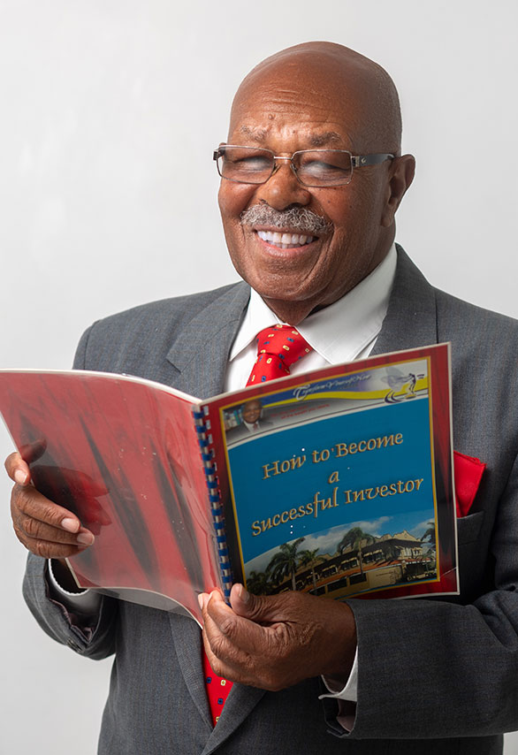

Understand ownership
Discover what it means to own shares of a business and why the basics matter more than the hype.
You don’t have to be wealthy to start learning how to invest. Author and mentor Lloyd A. Vermont Sr. makes the case for patient ownership, financial confidence, and passing knowledge from one generation to the next.
Financial markets can seem complicated or intimidating. Lloyd A. Vermont Sr.’s perspective emphasizes learning the fundamentals, making informed choices, and understanding the role that time can play in investing.
Discover what it means to own shares of a business and why the basics matter more than the hype.
Explore long-term investing, dividends, and compounding without promises of quick or guaranteed returns.
Share investing knowledge and financial confidence with the people who will come after you.
For readers who want to understand investing but feel intimidated by the noise surrounding the stock market.
Lloyd A. Vermont Sr.’s book invites everyday people to approach investing with curiosity rather than fear. Its central message is straightforward: understanding the fundamentals is a practical starting point, even if you do not have a large sum to invest.
Publication date and purchasing information have not yet been confirmed.
Lloyd A. Vermont Sr. has spent decades studying the stock market and encouraging others to understand the power of investing. His approach blends personal experience with a commitment to mentorship and financial education.
For Lloyd, investing is about more than money. It is also about the independence that knowledge can create and the opportunities one generation can help open for the next.
Explore his legacy
Readers and mentees describe how Lloyd A. Vermont Sr.’s teaching has influenced their thinking about investing, independence, and what is possible over time.
Education, entrepreneurship, and opportunity are themes that connect Lloyd A. Vermont Sr.’s personal heritage with his message about wealth across generations.
The family emblem is part of that story, linking his investing work to the larger values he hopes to pass along.
Stay part of the storyFuture learning resources and newsletter topics can help readers build knowledge one approachable idea at a time.
Get comfortable with the idea of ownership in publicly traded companies.
PROPOSED TOPICUnderstand the logic, limits, and risks behind patient, long-term investing.
PROPOSED TOPICExplore why financial knowledge can be an important family inheritance.
PROPOSED TOPIC